What It Actually Looks Like.
Every image from the case studies in one place: two live client sites, five sites pulled from the Wayback Machine as they looked when I shipped them, a game jam entry, and the print and social creative in between. Click a tile to view it full size and step through the set; the URL bar on each frame opens the page it shows.
The Northeastland Hotel
Captured from the live site in 2026. The URL bar on each frame opens the page it shows. Read the case study

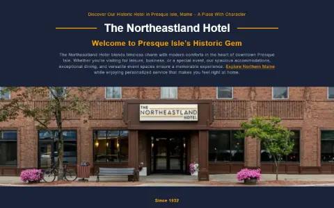
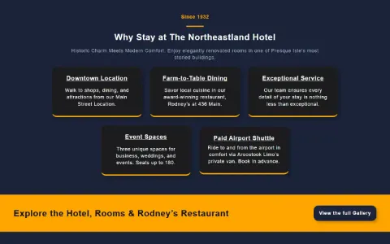
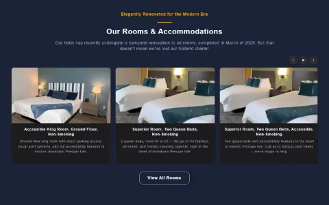
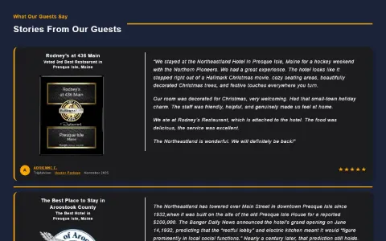
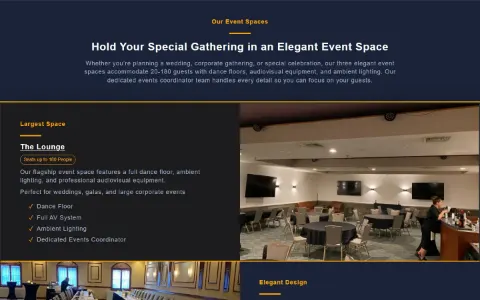
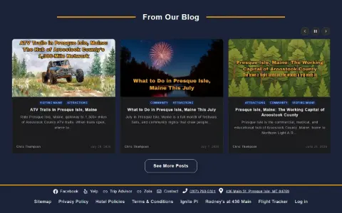
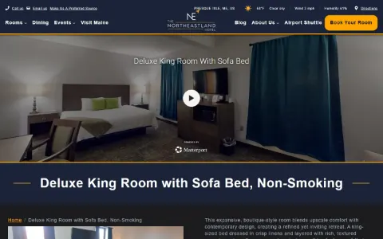
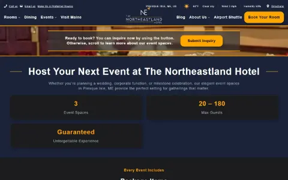
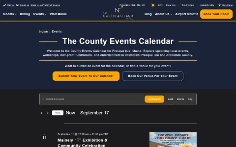
IgnitePI
Captured from the live site in 2026. The URL bar on each frame opens the page it shows. Read the case study

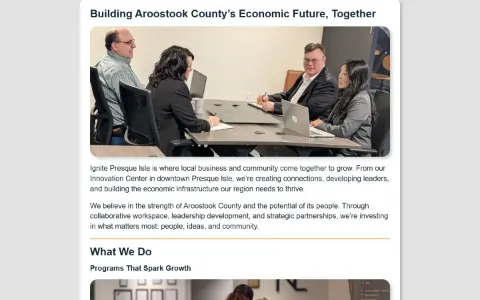
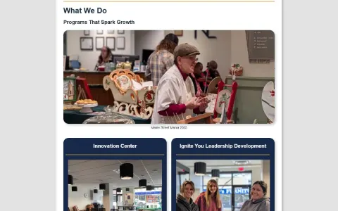
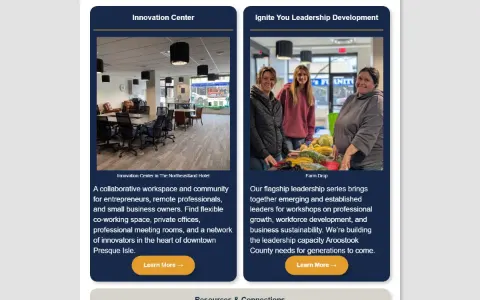
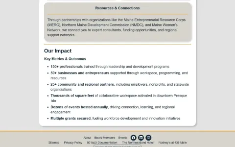
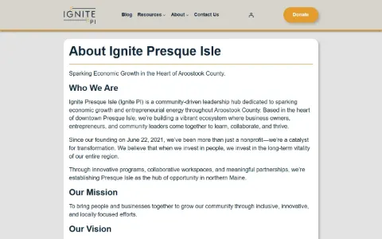
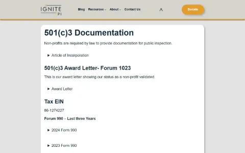
Streamershaven — The build

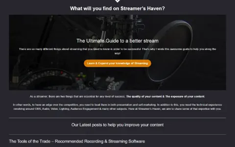
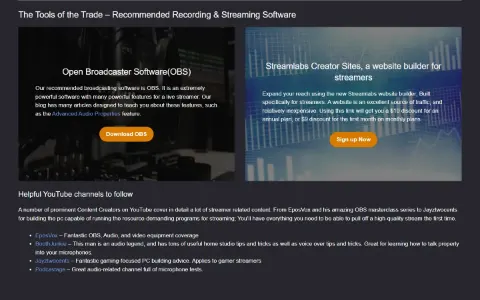
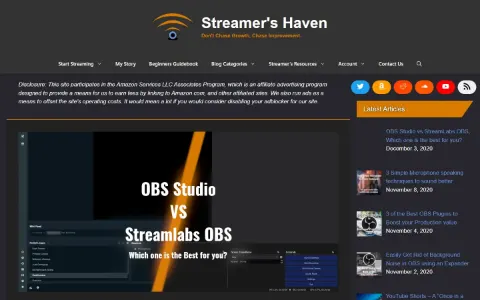
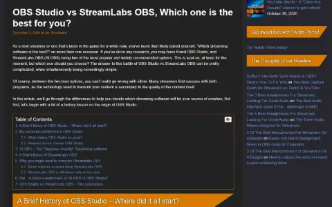
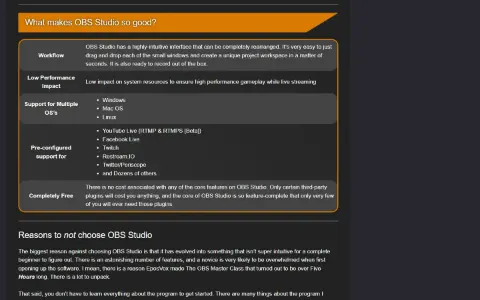
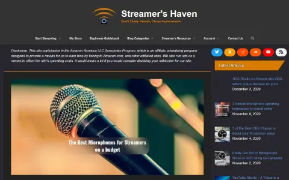
Streamershaven — The writing

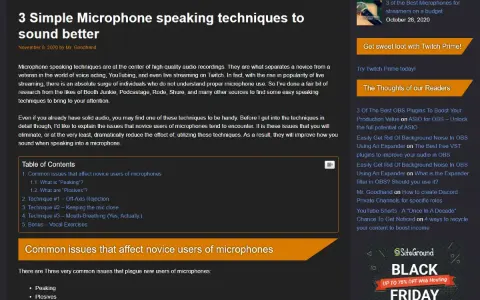
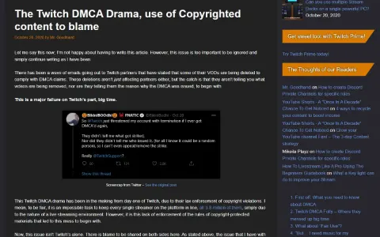
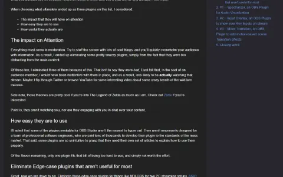
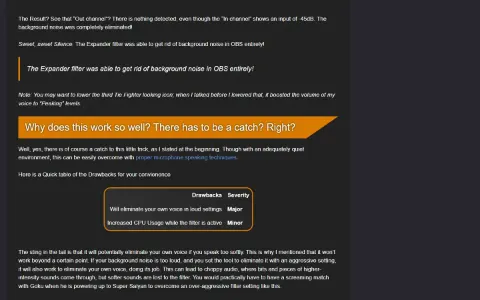
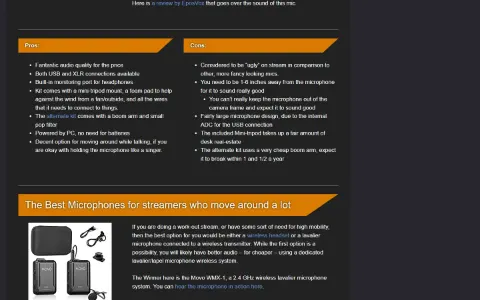
Notes of Yore
Captured from the Wayback Machine, May–July 2022; the URL bar on each frame opens the capture. Last, the Adventure Log itself: the cover and the interior spread from the print file. Read the case study
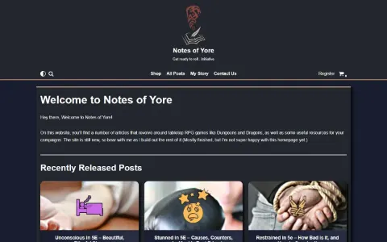
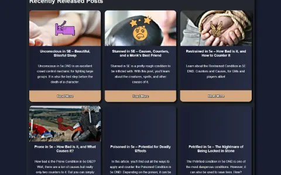
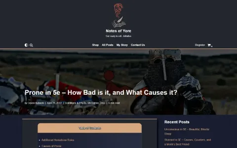
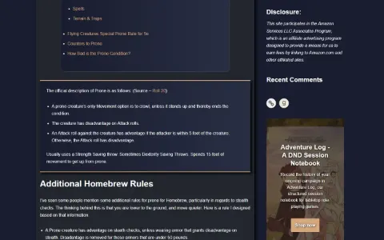
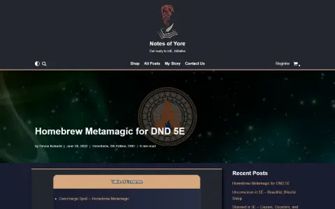
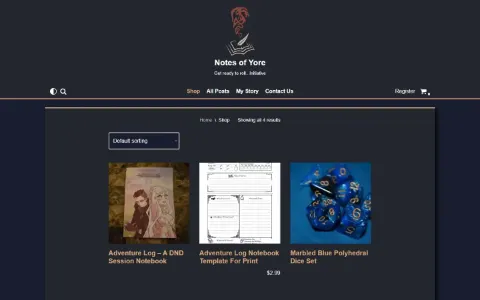


The Trail of Tales
Captured from the Wayback Machine, July–September 2024. The archive didn't keep the theme's fonts or the navigation stylesheet, so the header menu was restored from WordPress's own block CSS and the type falls back to the browser default. The URL bar on each frame opens the capture. Read the case study
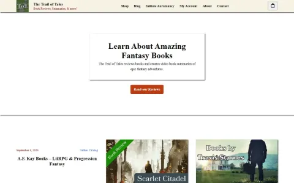
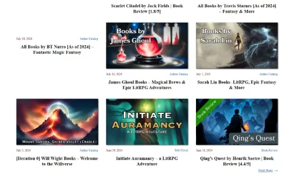
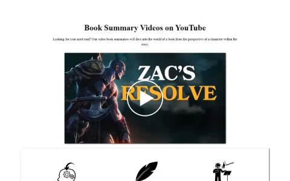
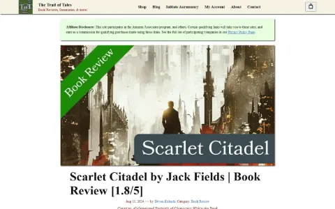
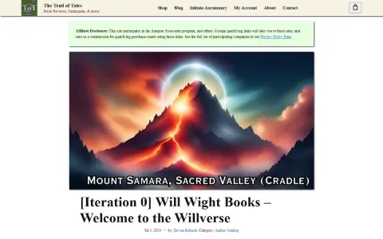
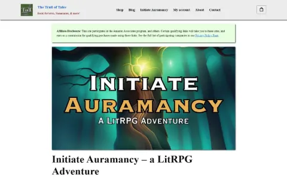
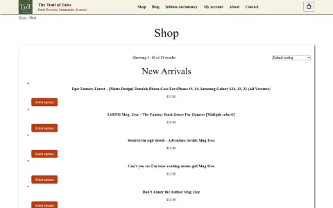
A Moon of Cheese
The game's itch.io page and its Game Off 2020 submission page, captured live in 2026. The URL bar on each frame opens the page. Read the case study
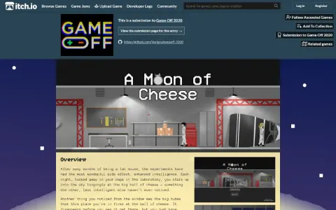
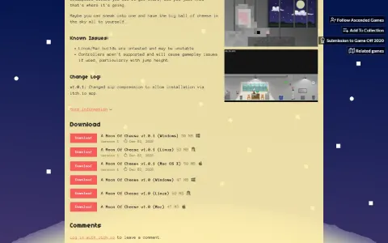
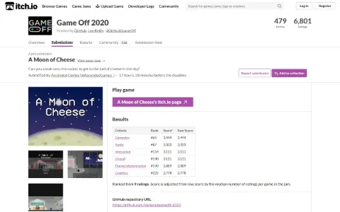
The Law Offices of Michael S. Lamonsoff
Captured from the Wayback Machine's September 2017 snapshot. The inner pages in the archive are missing their hero images, so these are the homepage sections; the URL bar on each frame opens the capture. Read the case study


BrainandSpinalCord.org
All from the Wayback Machine. The first is the WordPress build in November 2016; the second is the Drupal site in March 2016, before the migration. The URL bar on each frame opens the exact capture. Read the case study

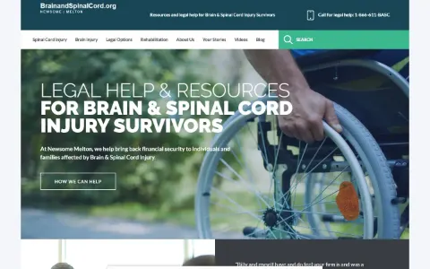
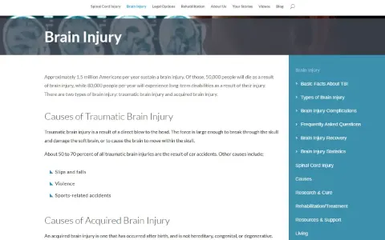
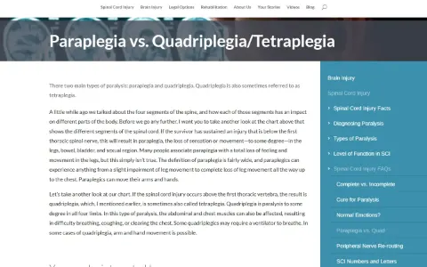
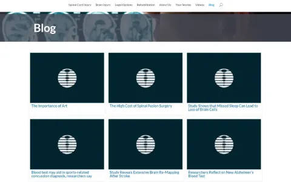
Alpha Pressure Washing
A sample of the marketing creative from June 2026: package-plan cards, before/after ad templates for Facebook and Nextdoor, an educational post, and Local Services Ads imagery. Shown at their native social sizes. Read the case study